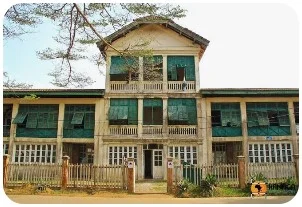
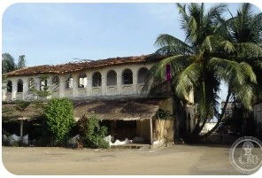
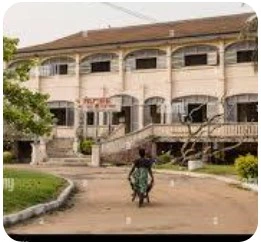
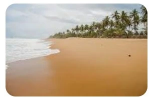

History and Architecture
Learn about the historic town, its buildings, streets, and architectural character.
Discover heritageExplore the history, architecture, cultural traditions, and coastal landscapes of one of Côte d'Ivoire's most distinctive historic towns.
Learn about its heritage and plan a thoughtful visit with this independent cultural and tourism guide.
Explore the attractions
Grand-Bassam is a coastal town in southeastern Côte d'Ivoire. Its historic district preserves important evidence of the country's past, including buildings and urban spaces that reflect its development as a colonial-era administrative and commercial center.
The Historic Town of Grand-Bassam is inscribed on the UNESCO World Heritage List. Its heritage includes both the built environment and the continuing cultural life of the community.
Learn more from the UNESCO World Heritage Centre .

Learn about the historic town, its buildings, streets, and architectural character.
Discover heritage
Explore traditional clothing, local creativity, and cultural expressions.
Explore culture
Discover the coast and learn about respecting the local environment.
Plan your visitUse the visitor guide to share your interests and save a preferred topic in your browser.
Open the visitor guide